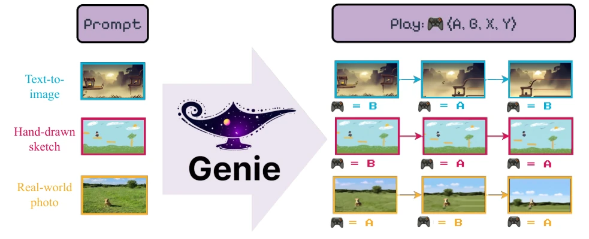
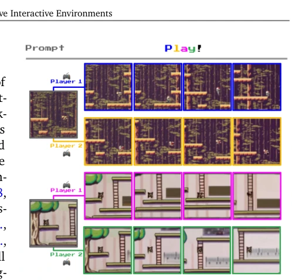
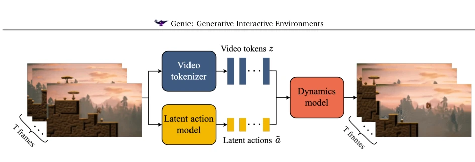
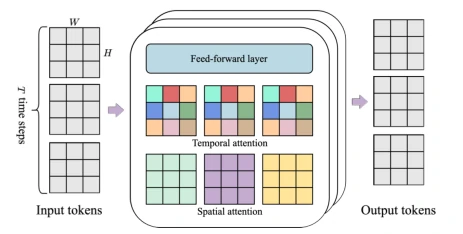
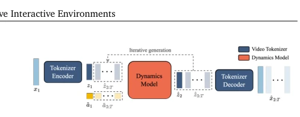
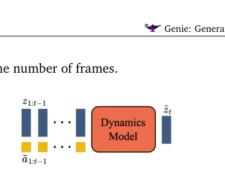
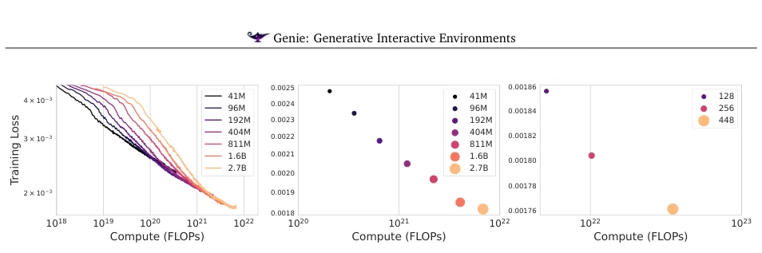
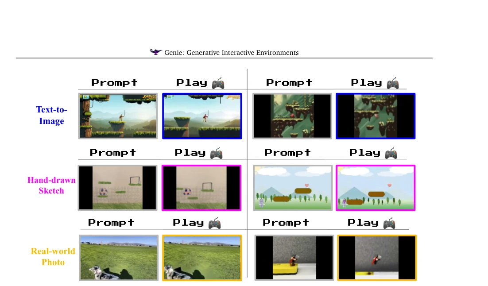
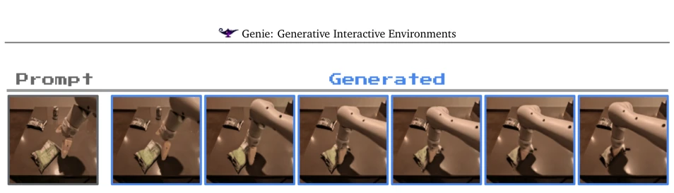
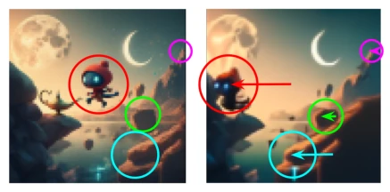

Genie can be seen as pouring a bucket of cold water on the "video generation" community, as previously everyone only cared about image quality, whereas it insists on pursuing "playability". The world model built upon 11B parameters can actually self-learn "operations" relying purely on video data, which is indeed impressive. However, do not get too excited too soon; the 1FPS interaction speed is simply like an "electronic accordion", wanting to play fast-paced games? It is a dream. Moreover, with a 16-frame memory window, long-term consistency relies entirely on metaphysics; play for a bit longer and hallucinations arise. Essentially, it is still MaskGIT wrapped with a VQ-VAE; the so-called "world model" is more like an advanced video generator capable of playing chain games. Although it is playable, there is still a considerable distance from a true generalist agent training environment, after all, it has never seen action labels and relies entirely on guessing.
研究动机Motivation
现有的视频生成模型通常只能被动生成，缺乏交互性。而传统世界模型（World Models）如 Ha and Schmidhuber (2018) 通常依赖昂贵的动作标签数据，难以扩展到互联网规模。Playable Video Generation (PVG) (Menapace et al., 2021) 虽尝试从视频学习，但局限于特定静态场景，无法通过 Prompt 生成新环境。Genie 试图填补这一空白：仅凭无标签的互联网视频，训练出既能生成高质量视频，又能通过潜在动作（Latent Actions）进行帧级控制的世界模型。这不仅能降低数据成本，还能为通用智能体（Generalist Agents）提供无限的数据源，解决强化学习中环境稀缺的问题。
Existing video generation models typically can only generate passively, lacking interactivity. Traditional World Models (World Models), such as Ha and Schmidhuber (2018), typically rely on expensive action label data and are difficult to scale to internet size. Playable Video Generation (PVG) (Menapace et al., 2021), although attempting to learn from video, is limited to specific static scenes and cannot generate new environments via Prompt. Genie attempts to fill this gap: training a world model that can both generate high-quality video and perform frame-level control through Latent Actions, relying solely on unlabeled internet video. This not only reduces data costs but also provides an infinite data source for Generalist Agents, addressing the problem of environment scarcity in reinforcement learning.

Figure 1 | A whole new world: Genie is capable of converting a variety of different prompts into interactive, playable environments that can be easily created, stepped into, and explored. This is made possible via a latent action interface, learned fully unsupervised from Internet videos. On the right we see a few generated steps for taking two latent actions. See more examples on our website.

Figure 2 | Diverse trajectories: Genie is a gen- erative model that can be used as an interactive environment. The model can be prompted in var- ious ways, either with a generated image (top) or a hand-drawn sketch (bottom). At each time step, the model takes a user-provided latent action to generate the next frame, producing trajectories with interesting and diverse character actions.
The core of Genie's architecture lies in "unsupervised action learning". The overall process is divided into two stages: training and inference. During training, a video Tokenizer (VQ-VAE based on ST-Transformer) is trained first to compress video into discrete Tokens. Subsequently, the Latent Action Model (LAM) and Dynamics Model are trained jointly. LAM infers latent actions from continuous frame pairs via an encoder; the decoder is used only for training signals and discarded during inference, where users input discrete action indices. The Dynamics Model, based on MaskGIT, receives historical Tokens and action Embeddings to predict the next frame Token. The key innovation lies in the ST-Transformer architecture, which reduces computational complexity from O(T^2) to O(T) compared to traditional Transformers, solving the computational bottleneck of long-term dependencies in video sequences. Additionally, LAM uses a VQ codebook to limit the action space size (8 in experiments), forcing the model to learn interpretable discrete actions rather than continuous latent variables, which significantly improves controllability. During inference, the user inputs an initial image and provides action indices frame by frame, and the model autoregressively generates subsequent frames.

Figure 3 | Genie model training: Genie takes in 𝑇frames of video as input, tokenizes them into discrete tokens 𝒛via the video tokenizer, and infers the latent actions ˜𝒂between each frame with the latent action model. Both are then passed to the dynamics model to generate predictions for the next frames in an iterative manner.

Figure 4 | ST-transformer architecture. The ar- chitecture is composed of 𝐿spatiotemporal blocks, each containing a spatial layer, temporal layer and feed-forward layer. Each color represents a single self-attention map, with the spatial layer attending over the 𝐻× 𝑊tokens from within a single time step, and temporal the same token from across the 𝑇time steps.

Figure 8 | Genie Inference: the prompt frame is tokenized, combined with the latent action taken by the user, and passed to the dynamics model for iterative generation. The predicted frame tokens are then decoded back to image space via the tokenizer’s decoder.

Figure 7 | Dynamics model: takes in video to- kens and action embeddings, and predicts future masked video tokens.
Experiments were primarily conducted on two datasets: 2D Platformer game videos (30,000 hours) and RT1 robot videos. Evaluation metrics include video fidelity (FVD) and controllability (ΔtPSNR). The 11B model performs excellently on Platformer, with lower FVD, and can handle unseen Prompts (such as hand-drawn sketches and real photos). On the RL task CoinRun, training policies using latent actions inferred by LAM requires only 200 expert samples to reach the performance of Oracle BC. Ablation studies indicate that LAM using pixel input directly outperforms Token input, and the proposed ST-ViViT achieves the best balance between memory usage and performance. However, the inference speed is only about 1FPS, and long-term consistency is still limited by the 16-frame memory window.

Figure 9 | Scaling results. Left: Training curves for different model sizes, Middle: Final training loss for each model size, averaged over the last 300 updates, Right: Final training loss for a 2.3B model with different batch sizes.

Figure 10 | Playing from Image Prompts: We can prompt Genie with images generated by text-to- image models, hand-drawn sketches or real-world photos. In each case we show the prompt frame and a second frame after taking one of the latent actions four consecutive times. In each case we see clear character movement, despite some of the images being visually distinct from the dataset.

Figure 11 | Learning to simulate deformable objects: we show frames from a ten step trajectory in the model, taking the same action. Genie is capable of learning the physical properties of objects such as bags of chips.

Figure 12 | Emulating parallax, a common fea- ture in platformer games. From this initial text- generated image, the foreground moves more than the near and far middle ground, while the background moves only slightly.